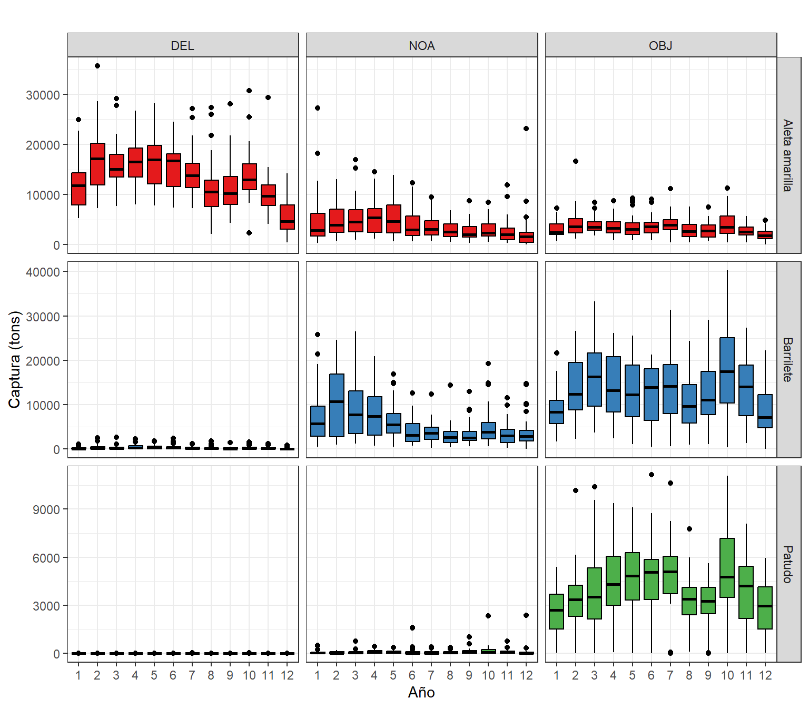
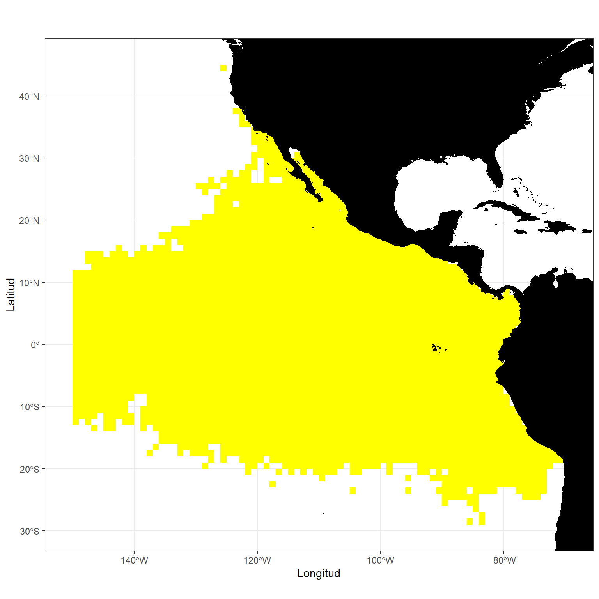
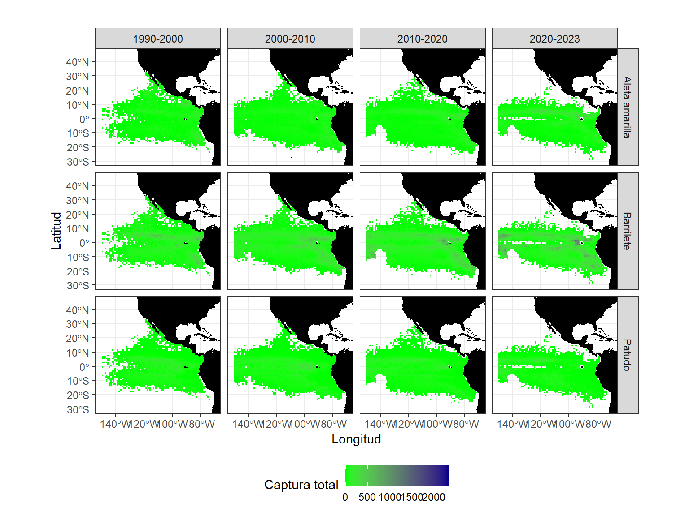
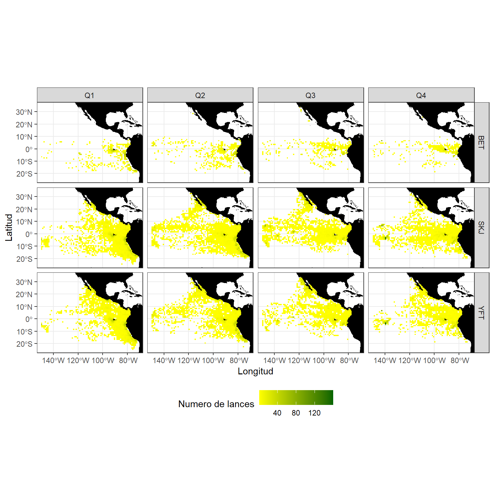
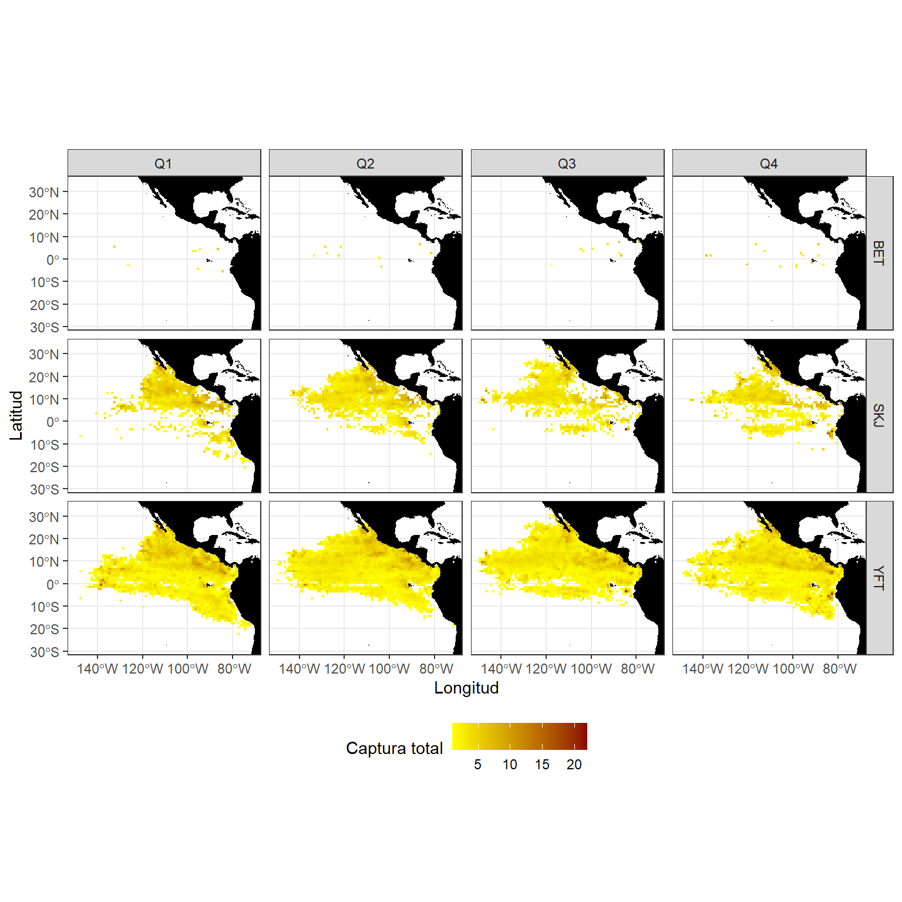
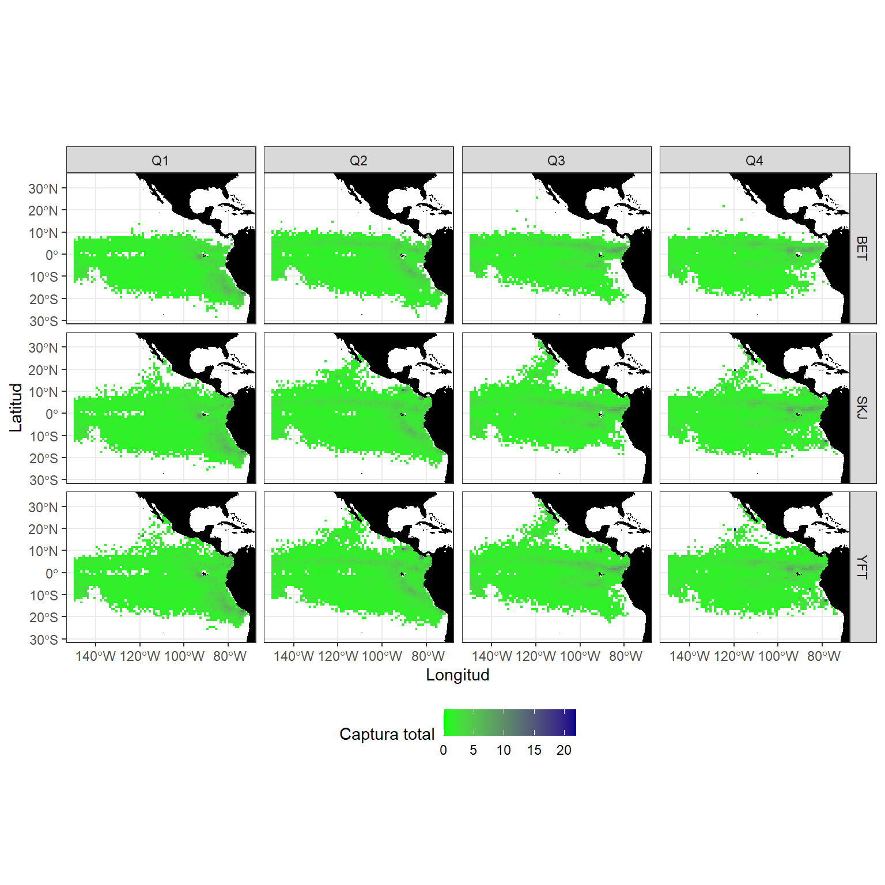

El análisis espacio-temporal de las capturas es clave para comprender la dinámica de las flotas de atún y su relación con factores ambientales, pesqueros y biológicos. Al integrar las dimensiones espaciales (¿dónde se capturan los atunes?) y temporales (¿cuándo se capturan?), se pueden identificar patrones y cambios en su distribución y abundancia, así como el caracterizar de la pesca.
En este trabajo nos preguntamos:
¿De qué manera varía la captura de atunes en función del tipo de lance utilizado?
¿Cuál es la tendencia temporal en la captura de atunes a lo largo de los años?
¿Existen patrones mensuales que puedan caracterizar la variabilidad en la captura de atunes?
¿Cuál es el área de pesca para las embarcaciones de cerco en el Océano Pacífico Oriental (OPO)?
¿Cómo han experimentado cambios estas áreas de pesca a lo largo del tiempo?
¿Se puede identificar un patrón espacial (mensual) que caracterice la captura de atunes en la región?
¿Cómo se puede caracterizar la captura de la especie Thunnus albacares o Atún de aleta amarilla (YFT)?
Datos sobre captura de atunes por tipo de lance
Los datos provienen de las capturas de atún realizadas por embarcaciones de cerco en el Océano Pacífico Oriental (OPO) durante el período 1990-2023. Estos datos fueron registrados por observadores a bordo en el mar o extraídos de los libros de registro de las embarcaciones cuando los datos de los observadores no están disponibles. Incluyen información sobre la captura, el número de lances, agregados por año, mes, tipo de lance, y por cuadrículas de 1°x1° de latitud/longitud.
Distribución actualmente conocida: Atlántico, Índico y Pacífico: en aguas tropicales y subtropicales. Ausente en el Mediterráneo. Especie altamente migratoria.
Figura 1. Distribución de los principales atunes
¿Y los tipo de lances?
Código
labelsLance <-data.frame(SetType =c("DEL", "NOA", "OBJ"),Lances =c("Lance sobre delfines", "Lance sobre atunes no asociados", "Lance sobre objeto flotante"))tb_lance <- labelsLance %>% knitr::kable("html", col.names =c("Tipo de Lance", "Descripción del Lance")) %>% kableExtra::kable_styling(bootstrap_options =c("striped", "hover"), full_width =FALSE) %>% kableExtra::add_header_above(c("Tabla 2. Tipos de lance y su descripción"=2)) %>% kableExtra::row_spec(0, bold =TRUE, background ="lightgray") %>% kableExtra::row_spec(1, bold =TRUE, color ="#1164B4")tb_lance
Year Month LatC1 LonC1 NumSets ALB BET BKJ BZX FRZ
251388 251388 153719 0 251388 50 72257 3773 611 1240
PBF SKJ TUN YFT
410 141058 36 187243
Código
print(sdatos0)
Year Month SetType LatC1
Min. :1990 Min. : 1.000 Length:754164 Min. :-28.500
1st Qu.:2001 1st Qu.: 4.000 Class :character 1st Qu.: -4.500
Median :2010 Median : 6.000 Mode :character Median : 2.500
Mean :2009 Mean : 6.358 Mean : 2.389
3rd Qu.:2017 3rd Qu.: 9.000 3rd Qu.: 8.500
Max. :2023 Max. :12.000 Max. : 44.500
LonC1 NumSets Species Catch
Min. :-149.5 Min. : 1.000 Length:754164 Min. : 0.00
1st Qu.:-116.5 1st Qu.: 1.000 Class :character 1st Qu.: 0.00
Median :-103.5 Median : 2.000 Mode :character Median : 1.00
Mean :-105.2 Mean : 3.709 Mean : 23.55
3rd Qu.: -90.5 3rd Qu.: 3.000 3rd Qu.: 16.00
Max. : -70.5 Max. :666.000 Max. :9937.04
Captura por tipo de lance y especie
El lance sobre delfines (DEL) es el más eficiente para la captura de Aleta amarilla, con un porcentaje dominante de 97.6%, mientras que es poco efectivo para Patudo y Barrilete.
El lance sobre atunes no asociados (NOA) es más efectivo para Barrilete, con un 57.5%, y también tiene una captura importante de Aleta amarilla (41.4%), mientras que es menos eficiente para Patudo (1.12%).
El lance sobre objeto flotante (OBJ) muestra una captura significativa de Barrilete (63.5%) y tiene una contribución moderada en la captura de Aleta amarilla (17.1%) y Patudo (19.4%).
Código
datos_captura_SetType <- datosSet %>%group_by(Species, SetType) %>%summarise(total =sum(Catch, na.rm =TRUE), .groups ="drop") %>%group_by(SetType) %>%mutate(rel_total = total /sum(total)) %>%ungroup() %>%left_join(labelsSp, by ="Species") ggplot(datos_captura_SetType, aes(x = SetType , y = rel_total, fill = names)) +geom_bar(stat ="identity", width =1) +coord_polar(theta ="y") +facet_wrap(~SetType , scales ="free_x", nrow =1) +labs(title ="", x ="", y ="Captura (tons)") +scale_fill_brewer(palette ="Set1", direction =1, name ="Especies") +theme_bw()
Figura 1. Captura total por tipo de lance y especie por buques atuneros cerqueros en el Océano Pacífico Oriental (OPO) durante 1990-2023. Tipos de lance: DEL: Lance sobre delfines, NOA: Lance sobre atunes no asociados, OBJ: Lance sobre objeto flotante.
Series temporales
Captura mensual por tipo de lance y especie
Código
datos <- datosSet0 datos_captura <- datos %>%group_by(Species, SetType, Year, Month) %>%summarise(Catch_total =sum(Catch, na.rm =TRUE), Lances_total =sum(NumSets, na.rm =TRUE), .groups ="drop") %>%left_join(labelsSp, by ="Species") datos_captura$Year.dec <- datos_captura$Year + (datos_captura$Month/12 )datos_captura$Year <-factor(datos_captura$Year, levels =1990:2023)datos_captura$Month <-factor(datos_captura$Month, levels =1:12)ggplot(datos_captura, aes(x = Year.dec, y = Catch_total, color = names, fill = names)) +geom_line(linewidth =0.7, col =1) +facet_grid(names ~ SetType, scales ="free_y") +labs(title ="", x ="Año", y ="Captura (tons)") +theme_bw() +theme(legend.position ="bottom")
Figura 2. Serie mensual de la captura por tipo de lance y especie por los buques atuneros cerqueros en el Océano Pacífico Oriental (OPO) durante 1990-2023. Tipos de lance: DEL: Lance sobre delfines, NOA: Lance sobre atunes no asociados, OBJ: Lance sobre objeto flotante
Patrón mensual por tipo de lance y especie
Código
datos <- datosSet datos_captura <- datos %>%group_by(Species, SetType, Year, Month) %>%summarise(Catch_total =sum(Catch, na.rm =TRUE), Lances_total =sum(NumSets, na.rm =TRUE), .groups ="drop") %>%left_join(labelsSp, by ="Species") datos_captura$Month <-factor(datos_captura$Month, levels =1:12)ggplot(datos_captura, aes(x = Month, y = Catch_total, fill = names)) +geom_boxplot(outliers =TRUE, color =1 ) +facet_grid(names ~ SetType, scales ="free_y") +labs(title ="", x ="Año", y ="Captura (tons)") +scale_fill_brewer(palette ="Set1") +theme_bw() +theme(legend.position ="bottom") +theme(legend.position ="none")

Figura 3. Patrón mensual de la captura por tipo de lance y especie por los buques atuneros cerqueros en el Océano Pacífico Oriental (OPO) durante 1990-2023. Tipos de lance: DEL: Lance sobre delfines, NOA: Lance sobre atunes no asociados, OBJ: Lance sobre objeto flotante
Comportamiento espacial
Áreas de pesca
Código
datos_annual <- datos %>%group_by(Species, SetType, LatC1, LonC1, Year) %>%summarise(Catch_total =sum(Catch, na.rm =TRUE), Lances_total =sum(NumSets, na.rm =TRUE), .groups ="drop") %>%left_join(labelsSp, by ="Species")sf_land <-ne_countries(scale ="medium", returnclass ="sf", continent =c("South America", "North America")) datos_annual_sf <-st_as_sf(datos_annual, coords =c("LonC1", "LatC1"), crs =4326) ggplot() +geom_tile(data = datos_annual, fill ="yellow", aes(x = LonC1, y = LatC1)) +geom_sf(data = sf_land, fill ="black", color ="black") +# facet_wrap(~SetType, nrow = 3) labs( title ="",x ="Longitud", y ="Latitud" ) +theme_bw() +coord_sf(xlim =c(-150.5, -69.5), ylim =c(-29.5, 45.5))

Figura 4. Áreas de pesca de los buques atuneros cerqueros en el Océano Pacífico Oriental (OPO) durante 1990-2023.
Áreas de pesca por tipo de lance y especie
Se realiza el analisis de las áreas de pesca por tipo de lance y especie de los buques atuneros cerqueros en el Océano Pacífico Oriental (OPO) durante 2018-2023. Para sintetizar la información temporal, estos fueron agrupados cada 10 años.
Figura 5. Áreas de pesca por tipo de lance y especie de los buques atuneros cerqueros en el Océano Pacífico Oriental (OPO) durante 2018-2023. Tipos de lance, NOA: Lance sobre atunes no asociados.
Lance sobre delfines (DEL)
Código
datos_annual_1 <- datos_decadas %>%filter(SetType =="DEL") %>%filter(TotalLances >0)datos_sf <-st_as_sf(datos_annual_1, coords =c("LatC1", "LonC1"), crs =4326) ggplot() +geom_tile(data = datos_annual_1, aes(x = LonC1, y = LatC1, fill = TotalCatch)) +facet_grid(names ~ Decade) +scale_size_continuous(name ="Áreas de pesca") +geom_sf(data = sf_land, fill ="black", color ="black") +labs(title ="", x ="Longitud", y ="Latitud") +scale_fill_gradient(low ="yellow", high ="red4",name ="Captura total", limits =c(0, 2330)) +theme_bw() +coord_sf(xlim =c(-150.5, -69.5), ylim =c(-29.5, 45.5)) +theme(legend.position ="bottom")
Figura 6. Áreas de pesca por tipo de lance y especie de los buques atuneros cerqueros en el Océano Pacífico Oriental (OPO) durante 2018-2023. Tipos de lance, DEL: Lance sobre delfines.
Lance sobre objeto flotante (OBJ)
Código
datos_annual_1 <- datos_decadas %>%filter(SetType =="OBJ") %>%filter(TotalLances >0)datos_sf <-st_as_sf(datos_annual_1, coords =c("LatC1", "LonC1"), crs =4326) ggplot() +geom_tile(data = datos_annual_1, aes(x = LonC1, y = LatC1, fill = TotalCatch)) +facet_grid(names ~ Decade) +scale_size_continuous(name ="Áreas de pesca") +geom_sf(data = sf_land, fill ="black", color ="black") +labs(title ="", x ="Longitud", y ="Latitud") +scale_fill_gradient(low ="green", high ="blue4",name ="Captura total", limits =c(0, 2330)) +theme_bw() +coord_sf(xlim =c(-150.5, -69.5), ylim =c(-29.5, 45.5)) +theme(legend.position ="bottom")

Figura 7. Áreas de pesca por tipo de lance y especie de los buques atuneros cerqueros en el Océano Pacífico Oriental (OPO) durante 2018-2023. Tipos de lance, OBJ: lance sobre objeto flotante.
Comportamiento del esfuerzo espacial-estacional por tipo de lance y especie
Se realiza el analisis del nuero de lances promedio de las áreas de pesca por tipo de lance y especie de los buques atuneros cerqueros en el Océano Pacífico Oriental (OPO) durante 2018-2023. Para sintetizar la información temporal, estos fueron agrupados cada tres meses.
Lance sobre atunes no asociados (NOA)
Código
datos_trimestres <- datos %>%mutate(Quarter =case_when( Month %in%1:3~"Q1", Month %in%4:6~"Q2", Month %in%7:9~"Q3", Month %in%10:12~"Q4" )) %>%group_by(Species, SetType, LatC1, LonC1, Quarter) %>%summarise(Catch =mean(Catch, na.rm =TRUE), Lances =mean(NumSets, na.rm =TRUE), .groups ="drop") %>%left_join(labelsSp, by ="Species")datos_triem <- datos_trimestres %>%filter(Catch >0) %>%filter(SetType =="NOA")# range(datos_triem$Lances)# range(datos_triem$LonC1); range(datos_triem$LatC1)ggplot() +geom_tile(data = datos_triem, aes(x = LonC1, y = LatC1, fill = Lances)) +scale_fill_gradient(low ="yellow", high ="darkgreen",name ="Numero de lances", limits =c(1, 159)) +facet_grid(Species ~ Quarter) +scale_size_continuous(name ="Áreas de pesca") +geom_sf(data = sf_land, fill ="black", color ="black") +labs( title ="",x ="Longitud", y ="Latitud" ) +theme_bw() +coord_sf(xlim =c(-149.5, -71.5), ylim =c(-24.5, 34.5)) +theme(legend.position ="bottom")

Figura 8. Áreas de pesca mensual por tipo de lance y especie de los buques atuneros cerqueros en el Océano Pacífico Oriental (OPO) durante 1990-2023
Lance sobre delfines (DEL)
Código
datos_triem <- datos_trimestres %>%filter(Catch >0) %>%filter(SetType =="DEL")# range(datos_triem$Lances)# range(datos_triem$LonC1); range(datos_triem$LatC1)ggplot() +geom_tile(data = datos_triem, aes(x = LonC1, y = LatC1, fill = Lances)) +scale_fill_gradient(low ="yellow", high ="red4",name ="Captura total", limits =c(1, 22)) +facet_grid(Species ~ Quarter) +scale_size_continuous(name ="Áreas de pesca") +geom_sf(data = sf_land, fill ="black", color ="black") +labs( title ="",x ="Longitud", y ="Latitud" ) +theme_bw() +coord_sf(xlim =c(-149.5, -71.5), ylim =c(-28.5, 33.5)) +theme(legend.position ="bottom")

Figura 9. Áreas de pesca mensual por tipo de lance y especie de los buques atuneros cerqueros en el Océano Pacífico Oriental (OPO) durante 1990-2023
Lance sobre objeto flotante (OBJ)
Código
datos_triem <- datos_trimestres %>%filter(Catch >0) %>%filter(SetType =="OBJ")# range(datos_triem$Lances)ggplot() +geom_tile(data = datos_triem, aes(x = LonC1, y = LatC1, fill = Lances)) +scale_fill_gradient(low ="green", high ="blue4",name ="Captura total", limits =c(0, 22)) +facet_grid(Species ~ Quarter) +scale_size_continuous(name ="Áreas de pesca") +geom_sf(data = sf_land, fill ="black", color ="black") +labs( title ="",x ="Longitud", y ="Latitud" ) +theme_bw() +coord_sf(xlim =c(-149.5, -71.5), ylim =c(-28.5, 33.5)) +theme(legend.position ="bottom")

Figura 10. Áreas de pesca mensual por tipo de lance y especie de los buques atuneros cerqueros en el Océano Pacífico Oriental (OPO) durante 1990-2023
Product identifier: GLOBAL_MULTIYEAR_PHY_ENS_001_031 Product name : Global Ocean EnsemblePhysics Reanalysis Dataset : cmems_mod_glo_phy-all_my_0.25deg_P1M-m
El producto CMEMS Global Ocean Ensemble Reanalysis a resolución de ¼ de grado ofrece medias mensuales de temperatura, salinidad, corrientes e hielo para 75 niveles verticales desde 1993. Utiliza un enfoque de conjunto multi-modelo que combina cuatro reanálisis (GLORYS2V4 de Mercator Ocean, ORAS5 de ECMWF, GloSea5 de Met Office y C-GLORSv7 de CMCC) para generar estimaciones globales del océano, utilizando datos de altimetría satelital y observaciones en situ. Este enfoque permite estimar incertidumbres en el estado del océano y, en ciertas regiones o períodos, la media del conjunto puede ofrecer estimaciones más confiables que los productos individuales. Los datos están disponibles en medias mensuales o diarias y describen el estado físico del océano.
Product identifier: GLOBAL_MULTIYEAR_BGC_001_029 Product name: Global OceanBiogeochemistry Hindcast Dataset: cmems_mod_glo_bgc_my_0.25deg_P1M-m
El hindcast biogeoquímico global, producido por Mercator-Ocean, proporciona campos biogeoquímicos 3D desde 1993 a una resolución de 1/4 grado y 75 niveles verticales, utilizando el modelo PISCES dentro de la plataforma NEMO (v3.6_STABLE), sin asimilación de datos. Los forzamientos incluyen la física oceánica FREEGLORYS2V4 y la atmósfera ERA-Interim. Los productos generados incluyen salidas diarias (clorofila, nitrato, fosfato, silicato, oxígeno disuelto, producción primaria) y mensuales (añadiendo hierro, fitoplancton en carbono). Los datos están interpolados en una malla regular estándar en formato NetCDF. Las condiciones iniciales provienen del World Ocean Atlas 2013 para nitrato, fosfato, silicato y oxígeno disuelto, de GLODAPv2 para DIC y alcalinidad, y de salidas de modelos climatológicos para hierro y DOC.
Modelos para predecir las capturas de Aleta amarilla (SKJ)
Marín-Enríquez, E., Moreno-Sánchez, X. G., Urcádiz-Cázares, F. J., Morales-Bojórquez, E., & Ramírez-Pérez, J. S. (2020). A spatially explicit model for predicting the probability of occurrence of zero-catch quadrants in the tuna purse seine fishery of the Eastern Tropical Pacific Ocean. Ciencias marinas, 46(1), 19-38.
---title: "Variabilidad espacio-temporal de las capturas de atún (1990-2023)"subtitle: "Hackaton en ciencia marina"author: ""date: "`r Sys.Date()`"format: html: code-fold: "show" code-tools: true code-block-border-left: "#e0c02c" code-block-bg: "#fbf7e6" theme: journal highlight: tango toc: true toc-depth: 4 toc_float: collapsed: false smooth_scroll: true toc-title: "Contenido" toc-location: right lang: "es"editor: visual---```{=html}<style> body { text-align: justify; } h1, h2, h3, .toc { text-align: left; /* Deja el título y el TOC alineados a la izquierda */ }</style>```**Contactos:**\📧 Elmer Ovidio Quispe Salazar: [qselmer\@gmail.com](mailto:qselmer@gmail.com)\📧 Malurisbel López Campos: [malurysbel\@gmail.com](mailto:malurysbel@gmail.com)```{r}#| label: setup#| include: falselibrary(visdat); library(dplyr); library(ggplot2)library(tidyr); library(cowplot); library(sf); library(rnaturalearth)library(RColorBrewer); library(DT)library(satin); library(ncdf4)library(reshape2); library(lubridate); library(reactable); library(data.table)```El análisis espacio-temporal de las capturas es clave para comprender la dinámica de las flotas de atún y su relación con factores ambientales, pesqueros y biológicos. Al integrar las dimensiones espaciales (**¿dónde se capturan los atunes?**) y temporales (**¿cuándo se capturan?**), se pueden identificar patrones y cambios en su distribución y abundancia, así como el caracterizar de la pesca.En este trabajo nos preguntamos:- ¿De qué manera varía la captura de atunes en función del tipo de lance utilizado?- ¿Cuál es la tendencia temporal en la captura de atunes a lo largo de los años?- ¿Existen patrones mensuales que puedan caracterizar la variabilidad en la captura de atunes?- ¿Cuál es el área de pesca para las embarcaciones de cerco en el Océano Pacífico Oriental (OPO)?- ¿Cómo han experimentado cambios estas áreas de pesca a lo largo del tiempo?- ¿Se puede identificar un patrón espacial (mensual) que caracterice la captura de atunes en la región?- ¿Cómo se puede caracterizar la captura de la especie <strong>[Thunnus albacares o Atún de aleta amarilla (YFT)?]{style="font-size: 17px; color: #1164B4"}</strong>## Datos sobre captura de atunes por tipo de lanceLos datos provienen de las capturas de atún realizadas por embarcaciones de cerco en el Océano Pacífico Oriental (OPO) durante el período 1990-2023. Estos datos fueron registrados por observadores a bordo en el mar o extraídos de los libros de registro de las embarcaciones cuando los datos de los observadores no están disponibles. Incluyen información sobre la captura, el número de lances, agregados por año, mes, tipo de lance, y por cuadrículas de 1°x1° de latitud/longitud.### ¿Y con que especies trabajamos?```{r}#| label: labels_sp#| include: TRUElabelsSp <-data.frame(Species =c("ALB", "BET", "BKJ", "BZX","FRZ", "PBF", "SKJ", "TUN","YFT"),names =c("Albacora", "Patudo", "Barrilete negro", "Bonito", "Melvas", "Aleta azul", "Barrilete", " Otros Atunes","Aleta amarilla"), scnames =c("Thunnus alalunga", "Thunnus obesus", "Euthynnus lineatus", "Sarda chiliensis, S. orientalis","Auxis thazard, A.rochei", "Thunnus orientalis", "Katsuwonus pelamis", "Thunnini", "Thunnus albacares"), selc =c(0 ,1, 0, 0, 0, 0, 1, 0, 1))tb <- labelsSp %>% knitr::kable("html", col.names =c("Código", "Especie", "Nombre Científico", "Selección")) %>% kableExtra::kable_styling(bootstrap_options =c("striped", "hover"), full_width = F) %>% kableExtra::add_header_above(c(" "=1, "Tabla 1. Códigos de especies FAO ASFIS"=3)) %>% kableExtra::row_spec(c(2, 7, 9), bold =TRUE, color ="#1164B4") %>% kableExtra::row_spec(0, bold =TRUE, background ="lightgray")tb```### ¿Qué sabemos de estas especies?Distribución actualmente conocida: Atlántico, Índico y Pacífico: en aguas tropicales y subtropicales. Ausente en el Mediterráneo. Especie altamente migratoria.{width="50%"}### ¿Y los tipo de lances?```{r}#| label: labels_lancelabelsLance <-data.frame(SetType =c("DEL", "NOA", "OBJ"),Lances =c("Lance sobre delfines", "Lance sobre atunes no asociados", "Lance sobre objeto flotante"))tb_lance <- labelsLance %>% knitr::kable("html", col.names =c("Tipo de Lance", "Descripción del Lance")) %>% kableExtra::kable_styling(bootstrap_options =c("striped", "hover"), full_width =FALSE) %>% kableExtra::add_header_above(c("Tabla 2. Tipos de lance y su descripción"=2)) %>% kableExtra::row_spec(0, bold =TRUE, background ="lightgray") %>% kableExtra::row_spec(1, bold =TRUE, color ="#1164B4")tb_lance``````{r}#| label: datos#| include: TRUEdatos0 <-read.csv("../../datos/PublicPSTunaSetType.csv", header = T)datosSet0 <- datos0 %>%pivot_longer(cols = ALB:YFT, names_to ="Species", values_to ="Catch") %>%filter(Species !="TUN")datosSet <- datos0 %>%pivot_longer(cols = ALB:YFT, names_to ="Species", values_to ="Catch") %>%filter(Species =="BET"| Species =="SKJ"| Species =="YFT")sdatos0 <-summary(datosSet) datosSet$SetType <-factor(datosSet$SetType)datosSet$Species <-factor(datosSet$Species)apply(datos0[, sapply(datos0, is.numeric)], 2, function(x) sum(x >0))``````{r}print(sdatos0)```## Captura por tipo de lance y especie- El lance sobre delfines (DEL) es el más eficiente para la captura de Aleta amarilla, con un porcentaje dominante de 97.6%, mientras que es poco efectivo para Patudo y Barrilete.- El lance sobre atunes no asociados (NOA) es más efectivo para Barrilete, con un 57.5%, y también tiene una captura importante de Aleta amarilla (41.4%), mientras que es menos eficiente para Patudo (1.12%).- El lance sobre objeto flotante (OBJ) muestra una captura significativa de Barrilete (63.5%) y tiene una contribución moderada en la captura de Aleta amarilla (17.1%) y Patudo (19.4%).```{r}#| label: captura_SetType#| fig.cap: "Figura 1. Captura total por tipo de lance y especie por buques atuneros cerqueros en el Océano Pacífico Oriental (OPO) durante 1990-2023. Tipos de lance: DEL: Lance sobre delfines, NOA: Lance sobre atunes no asociados, OBJ: Lance sobre objeto flotante."#| fig.height: 4#| fig.width: 8datos_captura_SetType <- datosSet %>%group_by(Species, SetType) %>%summarise(total =sum(Catch, na.rm =TRUE), .groups ="drop") %>%group_by(SetType) %>%mutate(rel_total = total /sum(total)) %>%ungroup() %>%left_join(labelsSp, by ="Species") ggplot(datos_captura_SetType, aes(x = SetType , y = rel_total, fill = names)) +geom_bar(stat ="identity", width =1) +coord_polar(theta ="y") +facet_wrap(~SetType , scales ="free_x", nrow =1) +labs(title ="", x ="", y ="Captura (tons)") +scale_fill_brewer(palette ="Set1", direction =1, name ="Especies") +theme_bw()```## Series temporales### Captura mensual por tipo de lance y especie```{r}#| label: captura_mensual#| fig.cap: "Figura 2. Serie mensual de la captura por tipo de lance y especie por los buques atuneros cerqueros en el Océano Pacífico Oriental (OPO) durante 1990-2023. Tipos de lance: DEL: Lance sobre delfines, NOA: Lance sobre atunes no asociados, OBJ: Lance sobre objeto flotante"#| fig.height: 8#| fig.width: 8datos <- datosSet0 datos_captura <- datos %>%group_by(Species, SetType, Year, Month) %>%summarise(Catch_total =sum(Catch, na.rm =TRUE), Lances_total =sum(NumSets, na.rm =TRUE), .groups ="drop") %>%left_join(labelsSp, by ="Species") datos_captura$Year.dec <- datos_captura$Year + (datos_captura$Month/12 )datos_captura$Year <-factor(datos_captura$Year, levels =1990:2023)datos_captura$Month <-factor(datos_captura$Month, levels =1:12)ggplot(datos_captura, aes(x = Year.dec, y = Catch_total, color = names, fill = names)) +geom_line(linewidth =0.7, col =1) +facet_grid(names ~ SetType, scales ="free_y") +labs(title ="", x ="Año", y ="Captura (tons)") +theme_bw() +theme(legend.position ="bottom") ```### Patrón mensual por tipo de lance y especie```{r}#| label: patron_mensual#| fig.cap: "Figura 3. Patrón mensual de la captura por tipo de lance y especie por los buques atuneros cerqueros en el Océano Pacífico Oriental (OPO) durante 1990-2023. Tipos de lance: DEL: Lance sobre delfines, NOA: Lance sobre atunes no asociados, OBJ: Lance sobre objeto flotante"#| fig.height: 7#| fig.width: 8datos <- datosSet datos_captura <- datos %>%group_by(Species, SetType, Year, Month) %>%summarise(Catch_total =sum(Catch, na.rm =TRUE), Lances_total =sum(NumSets, na.rm =TRUE), .groups ="drop") %>%left_join(labelsSp, by ="Species") datos_captura$Month <-factor(datos_captura$Month, levels =1:12)ggplot(datos_captura, aes(x = Month, y = Catch_total, fill = names)) +geom_boxplot(outliers =TRUE, color =1 ) +facet_grid(names ~ SetType, scales ="free_y") +labs(title ="", x ="Año", y ="Captura (tons)") +scale_fill_brewer(palette ="Set1") +theme_bw() +theme(legend.position ="bottom") +theme(legend.position ="none") ```## Comportamiento espacial### Áreas de pesca```{r}#| label: area#| fig.cap: "Figura 4. Áreas de pesca de los buques atuneros cerqueros en el Océano Pacífico Oriental (OPO) durante 1990-2023."#| fig.height: 8#| fig.width: 8datos_annual <- datos %>%group_by(Species, SetType, LatC1, LonC1, Year) %>%summarise(Catch_total =sum(Catch, na.rm =TRUE), Lances_total =sum(NumSets, na.rm =TRUE), .groups ="drop") %>%left_join(labelsSp, by ="Species")sf_land <-ne_countries(scale ="medium", returnclass ="sf", continent =c("South America", "North America")) datos_annual_sf <-st_as_sf(datos_annual, coords =c("LonC1", "LatC1"), crs =4326) ggplot() +geom_tile(data = datos_annual, fill ="yellow", aes(x = LonC1, y = LatC1)) +geom_sf(data = sf_land, fill ="black", color ="black") +# facet_wrap(~SetType, nrow = 3) labs( title ="",x ="Longitud", y ="Latitud" ) +theme_bw() +coord_sf(xlim =c(-150.5, -69.5), ylim =c(-29.5, 45.5)) ```### Áreas de pesca por tipo de lance y especieSe realiza el analisis de las áreas de pesca por tipo de lance y especie de los buques atuneros cerqueros en el Océano Pacífico Oriental (OPO) durante 2018-2023. Para sintetizar la información temporal, estos fueron agrupados cada 10 años.#### Lance sobre atunes no asociados (NOA)```{r}#| label: areas_pesca_1#| fig.cap: "Figura 5. Áreas de pesca por tipo de lance y especie de los buques atuneros cerqueros en el Océano Pacífico Oriental (OPO) durante 2018-2023. Tipos de lance, NOA: Lance sobre atunes no asociados."#| fig.height: 8#| fig.width: 8datos_decadas <- datos_annual %>%mutate(Decade =paste0((Year %/%10) *10, "-", ((Year %/%10) *10) +10)) %>%group_by(names, SetType, LatC1, LonC1, Decade) %>%summarise(TotalCatch =mean(Catch_total, na.rm =TRUE), TotalLances =mean(Lances_total, na.rm =TRUE), .groups ="drop")datos_decadas[datos_decadas =="2020-2030"] <-"2020-2023"datos_decadas$Decade <-factor(datos_decadas$Decade, levels =c("1990-2000", "2000-2010", "2010-2020", "2020-2023"))datos_annual_1 <- datos_decadas %>%filter(SetType =="NOA") %>%filter(TotalLances >0) %>%filter(TotalCatch >0)# range(datos_annual_1$LonC1); range(datos_annual_1$LatC1)datos_sf <-st_as_sf(datos_annual_1, coords =c("LatC1", "LonC1"), crs =4326) ggplot() +geom_tile(data = datos_annual_1, aes(x = LonC1, y = LatC1, fill = TotalCatch)) +facet_grid(names ~ Decade) +scale_size_continuous(name ="Áreas de pesca") +geom_sf(data = sf_land, fill ="black", color ="black") +labs(title ="", x ="Longitud", y ="Latitud") +scale_fill_gradient(low ="yellow", high ="darkgreen",name ="Captura total", limits =c(0, 3275)) +theme_bw() +coord_sf(xlim =c(-150.5, -69.5), ylim =c(-29.5, 45.5)) +theme(legend.position ="bottom")```#### Lance sobre delfines (DEL)```{r}#| label: areas_pesca_2#| fig.cap: "Figura 6. Áreas de pesca por tipo de lance y especie de los buques atuneros cerqueros en el Océano Pacífico Oriental (OPO) durante 2018-2023. Tipos de lance, DEL: Lance sobre delfines."#| fig.height: 6#| fig.width: 8datos_annual_1 <- datos_decadas %>%filter(SetType =="DEL") %>%filter(TotalLances >0)datos_sf <-st_as_sf(datos_annual_1, coords =c("LatC1", "LonC1"), crs =4326) ggplot() +geom_tile(data = datos_annual_1, aes(x = LonC1, y = LatC1, fill = TotalCatch)) +facet_grid(names ~ Decade) +scale_size_continuous(name ="Áreas de pesca") +geom_sf(data = sf_land, fill ="black", color ="black") +labs(title ="", x ="Longitud", y ="Latitud") +scale_fill_gradient(low ="yellow", high ="red4",name ="Captura total", limits =c(0, 2330)) +theme_bw() +coord_sf(xlim =c(-150.5, -69.5), ylim =c(-29.5, 45.5)) +theme(legend.position ="bottom")```#### Lance sobre objeto flotante (OBJ)```{r}#| label: areas_pesca_3#| fig.cap: "Figura 7. Áreas de pesca por tipo de lance y especie de los buques atuneros cerqueros en el Océano Pacífico Oriental (OPO) durante 2018-2023. Tipos de lance, OBJ: lance sobre objeto flotante."#| fig.height: 6#| fig.width: 8datos_annual_1 <- datos_decadas %>%filter(SetType =="OBJ") %>%filter(TotalLances >0)datos_sf <-st_as_sf(datos_annual_1, coords =c("LatC1", "LonC1"), crs =4326) ggplot() +geom_tile(data = datos_annual_1, aes(x = LonC1, y = LatC1, fill = TotalCatch)) +facet_grid(names ~ Decade) +scale_size_continuous(name ="Áreas de pesca") +geom_sf(data = sf_land, fill ="black", color ="black") +labs(title ="", x ="Longitud", y ="Latitud") +scale_fill_gradient(low ="green", high ="blue4",name ="Captura total", limits =c(0, 2330)) +theme_bw() +coord_sf(xlim =c(-150.5, -69.5), ylim =c(-29.5, 45.5)) +theme(legend.position ="bottom")```### Comportamiento del esfuerzo espacial-estacional por tipo de lance y especieSe realiza el analisis del nuero de lances promedio de las áreas de pesca por tipo de lance y especie de los buques atuneros cerqueros en el Océano Pacífico Oriental (OPO) durante 2018-2023. Para sintetizar la información temporal, estos fueron agrupados cada tres meses.#### Lance sobre atunes no asociados (NOA)```{r}#| label: areas_pesca_mensual_1#| fig.cap: "Figura 8. Áreas de pesca mensual por tipo de lance y especie de los buques atuneros cerqueros en el Océano Pacífico Oriental (OPO) durante 1990-2023"#| fig.height: 8#| fig.width: 8datos_trimestres <- datos %>%mutate(Quarter =case_when( Month %in%1:3~"Q1", Month %in%4:6~"Q2", Month %in%7:9~"Q3", Month %in%10:12~"Q4" )) %>%group_by(Species, SetType, LatC1, LonC1, Quarter) %>%summarise(Catch =mean(Catch, na.rm =TRUE), Lances =mean(NumSets, na.rm =TRUE), .groups ="drop") %>%left_join(labelsSp, by ="Species")datos_triem <- datos_trimestres %>%filter(Catch >0) %>%filter(SetType =="NOA")# range(datos_triem$Lances)# range(datos_triem$LonC1); range(datos_triem$LatC1)ggplot() +geom_tile(data = datos_triem, aes(x = LonC1, y = LatC1, fill = Lances)) +scale_fill_gradient(low ="yellow", high ="darkgreen",name ="Numero de lances", limits =c(1, 159)) +facet_grid(Species ~ Quarter) +scale_size_continuous(name ="Áreas de pesca") +geom_sf(data = sf_land, fill ="black", color ="black") +labs( title ="",x ="Longitud", y ="Latitud" ) +theme_bw() +coord_sf(xlim =c(-149.5, -71.5), ylim =c(-24.5, 34.5)) +theme(legend.position ="bottom")```#### Lance sobre delfines (DEL)```{r}#| label: areas_pesca_mensual_2#| fig.cap: "Figura 9. Áreas de pesca mensual por tipo de lance y especie de los buques atuneros cerqueros en el Océano Pacífico Oriental (OPO) durante 1990-2023"#| fig.height: 8#| fig.width: 8datos_triem <- datos_trimestres %>%filter(Catch >0) %>%filter(SetType =="DEL")# range(datos_triem$Lances)# range(datos_triem$LonC1); range(datos_triem$LatC1)ggplot() +geom_tile(data = datos_triem, aes(x = LonC1, y = LatC1, fill = Lances)) +scale_fill_gradient(low ="yellow", high ="red4",name ="Captura total", limits =c(1, 22)) +facet_grid(Species ~ Quarter) +scale_size_continuous(name ="Áreas de pesca") +geom_sf(data = sf_land, fill ="black", color ="black") +labs( title ="",x ="Longitud", y ="Latitud" ) +theme_bw() +coord_sf(xlim =c(-149.5, -71.5), ylim =c(-28.5, 33.5)) +theme(legend.position ="bottom")```#### Lance sobre objeto flotante (OBJ)```{r}#| label: areas_pesca_mensual_3#| fig.cap: "Figura 10. Áreas de pesca mensual por tipo de lance y especie de los buques atuneros cerqueros en el Océano Pacífico Oriental (OPO) durante 1990-2023"#| fig.height: 8#| fig.width: 8datos_triem <- datos_trimestres %>%filter(Catch >0) %>%filter(SetType =="OBJ")# range(datos_triem$Lances)ggplot() +geom_tile(data = datos_triem, aes(x = LonC1, y = LatC1, fill = Lances)) +scale_fill_gradient(low ="green", high ="blue4",name ="Captura total", limits =c(0, 22)) +facet_grid(Species ~ Quarter) +scale_size_continuous(name ="Áreas de pesca") +geom_sf(data = sf_land, fill ="black", color ="black") +labs( title ="",x ="Longitud", y ="Latitud" ) +theme_bw() +coord_sf(xlim =c(-149.5, -71.5), ylim =c(-28.5, 33.5)) +theme(legend.position ="bottom")```## Variables ambientales### Temperatura (0.25° × 0.25°)[Link](https://doi.org/10.48670/moi-00024)*Product identifier: GLOBAL_MULTIYEAR_PHY_ENS_001_031 Product name : Global Ocean Ensemble**Physics Reanalysis Dataset : cmems_mod_glo_phy-all_my_0.25deg_P1M-m*El producto CMEMS Global Ocean Ensemble Reanalysis a resolución de ¼ de grado ofrece medias mensuales de temperatura, salinidad, corrientes e hielo para 75 niveles verticales desde 1993. Utiliza un enfoque de conjunto multi-modelo que combina cuatro reanálisis (GLORYS2V4 de Mercator Ocean, ORAS5 de ECMWF, GloSea5 de Met Office y C-GLORSv7 de CMCC) para generar estimaciones globales del océano, utilizando datos de altimetría satelital y observaciones en situ. Este enfoque permite estimar incertidumbres en el estado del océano y, en ciertas regiones o períodos, la media del conjunto puede ofrecer estimaciones más confiables que los productos individuales. Los datos están disponibles en medias mensuales o diarias y describen el estado físico del océano.```{r}#| label: temp_ambiental#| warning: FALSEncf <-"J:/cmems_mod_glo_phy-all_my_0.25deg_P1M-m_1732825261563.nc"nc_data <-nc_open(ncf)# ncatt_get(nc_data, "time", "units")lon <-ncvar_get(nc_data, "longitude")lat <-ncvar_get(nc_data, "latitude")time <-ncvar_get(nc_data, "time")time <-as.POSIXct(time, origin ="1970-01-01", tz ="UTC")temp <-ncvar_get(nc_data, "thetao_cglo") temp_df <-melt(temp, varnames =c("lon_idx", "lat_idx", "time_idx"),value.name ="thetao_cglo_value")temp_df$lon <- lon[temp_df$lon_idx]temp_df$lat <- lat[temp_df$lat_idx]temp_df$time <- time[temp_df$time_idx]nc_close(nc_data)temp_df$Year <-year(temp_df$time)temp_df$Month <-month(temp_df$time)#***********************temp_df_ex <- temp_df %>%filter(Year ==2015) %>%filter(Month ==6) %>%filter(!is.na(thetao_cglo_value))```### Clorofila (0.5° × 0.5°)[Link](https://doi.org/10.48670/moi-00019)*Product identifier: GLOBAL_MULTIYEAR_BGC_001_029 Product name: Global Ocean* *Biogeochemistry Hindcast Dataset: cmems_mod_glo_bgc_my_0.25deg_P1M-m*El hindcast biogeoquímico global, producido por Mercator-Ocean, proporciona campos biogeoquímicos 3D desde 1993 a una resolución de 1/4 grado y 75 niveles verticales, utilizando el modelo PISCES dentro de la plataforma NEMO (v3.6_STABLE), sin asimilación de datos. Los forzamientos incluyen la física oceánica FREEGLORYS2V4 y la atmósfera ERA-Interim. Los productos generados incluyen salidas diarias (clorofila, nitrato, fosfato, silicato, oxígeno disuelto, producción primaria) y mensuales (añadiendo hierro, fitoplancton en carbono). Los datos están interpolados en una malla regular estándar en formato NetCDF. Las condiciones iniciales provienen del World Ocean Atlas 2013 para nitrato, fosfato, silicato y oxígeno disuelto, de GLODAPv2 para DIC y alcalinidad, y de salidas de modelos climatológicos para hierro y DOC.```{r}#| label: chl_ambiental#| warning: FALSEncf <-"J:/cmems_mod_glo_bgc_my_0.25deg_P1M-m_1732803094087.nc"nc_data <-nc_open(ncf)# ncatt_get(nc_data, "time", "units")lon <-ncvar_get(nc_data, "longitude")lat <-ncvar_get(nc_data, "latitude")time <-ncvar_get(nc_data, "time")time <-as.POSIXct(time, origin ="1970-01-01", tz ="UTC")chl <-ncvar_get(nc_data, "chl") chl_df <-melt(chl, varnames =c("lon_idx", "lat_idx", "time_idx"),value.name ="chl_value")chl_df$lon <- lon[chl_df$lon_idx]chl_df$lat <- lat[chl_df$lat_idx]chl_df$time <- time[chl_df$time_idx]nc_close(nc_data)chl_df$Year <-year(chl_df$time)chl_df$Month <-month(chl_df$time)#***********************chl_df_ex <- chl_df %>%filter(Year ==2015) %>%filter(Month ==6) %>%filter(!is.na(chl_value))```# Modelos para predecir las capturas de *Aleta amarilla (SKJ)*Marín-Enríquez, E., Moreno-Sánchez, X. G., Urcádiz-Cázares, F. J., Morales-Bojórquez, E., & Ramírez-Pérez, J. S. (2020). A spatially explicit model for predicting the probability of occurrence of zero-catch quadrants in the tuna purse seine fishery of the Eastern Tropical Pacific Ocean. Ciencias marinas, 46(1), 19-38.```{r}#| label: captura_skjdatos <- datosSetdatosskj <- datos %>%filter(Species =="SKJ") %>%mutate(Catchlog =log(Catch +1)) %>%select(- Species)datosskj$lon <- datosskj$LonC1; datosskj$lat <- datosskj$LatC1datosskj <- datosskj[datosskj$Year >=2015& datosskj$Year <=2023,]chl_df <- chl_df[chl_df$Year >=2015& chl_df$Year <=2023,]temp_df <- temp_df[temp_df$Year >=2015& temp_df$Year <=2023,]datos2 <-merge(datosskj, chl_df, by =c("lon", "lat", "Year", "Month"), all.x =TRUE)datos2 <-merge(datos2, temp_df, by =c("lon", "lat", "Year", "Month"), all.x =TRUE)datosskj <- datos2datosskj$Year <-factor(datosskj$Year, levels =1990:2023)datosskj$Month <-factor(datosskj$Month, levels =1:12)datosskj <- datosskj[, c("Year", "Month", "SetType", "NumSets", "Catchlog", "Catch", "lon", "lat", "chl_value", "thetao_cglo_value")]#***********************skj_df_ex <- datosskj %>%filter(Year ==2015) %>%filter(Month ==6) %>%filter(!is.na(Catch))summary(datosskj)``````{r}#| label: fig_clorofila#| fig.cap: "Figura 11. Clorofila y lances de pesca para la especie Aleta amarilla (SKJ)."#| fig.height: 8#| fig.width: 8chl_df_ex_sf <-st_as_sf(chl_df_ex, coords =c("lon", "lat"), crs =4326) ggplot() +geom_tile(data = chl_df_ex, aes(x = lon, y = lat, fill = chl_value)) +geom_point(data = skj_df_ex, aes(x = lon, y = lat), shape =1, size =0.5, color ="red")+geom_sf(data = sf_land, fill ="black", color ="black") +scale_fill_viridis_c(name ="Clorofila (mg/m³)", option ="viridis", limits =c(0.05, 2.42), breaks =seq(0.05, 2.42, by =0.4)) +labs( title ="",x ="Longitud", y ="Latitud" ) +theme_bw() +coord_sf(xlim =c(-147.5, -75.5), ylim =c(-19.5, 32.5)) ``````{r}#| label: fig_temperatura#| fig.cap: "Figura 12. TSM y lances de pesca para la especie Aleta amarilla (SKJ)."#| fig.height: 8#| fig.width: 8ggplot() +geom_tile(data = temp_df_ex, aes(x = lon, y = lat, fill = thetao_cglo_value)) +geom_sf(data = sf_land, fill ="black", color ="black") +geom_point(data = skj_df_ex, aes(x = lon, y = lat), shape =1, size =0.5, color ="white")+scale_fill_viridis_c(name ="TSM (°C)", option ="rocket", direction =-1, limits =c(19.20 , 30.23), breaks =seq(19, 301, by =2) ) +labs( title ="",x ="Longitud", y ="Latitud" ) +theme_bw() +coord_sf(xlim =c(-147.5, -75.5), ylim =c(-19.5, 32.5)) ```## Analisis exploratorio de datos```{r}#| label: fig_eda#| fig.cap: "Figura 13. Analisis exploratorio de la captura de la especie Aleta amarilla (SKJ)."#| warning: FALSE#| fig.height: 8#| fig.width: 8(sum(datosskj$Catch >0)/nrow(datosskj))*100datosskj <- datosskj[datosskj$Catch >0, ]e1 <-ggplot(datosskj, aes(x = Catchlog)) +geom_histogram(bins =30, fill ="blue", color ="black", alpha =0.7) +labs( x ="log.Catch", y ="Frecuencia" ) +theme_minimal()e2 <-ggplot(datosskj, aes(x = SetType, y = Catchlog)) +geom_boxplot(outliers =TRUE) +labs(x ="Tipo de lances",y ="Captura (tons)" ) +theme_bw()e3 <-ggplot(datosskj, aes(x = Year, y = Catchlog)) +geom_boxplot(outliers =TRUE) +labs( x ="Años", y ="log.Captura (tons)") +scale_x_discrete(breaks =seq(2015, 2023, by =2) # Mostrar cada 10 años ) +theme_bw()e4 <-ggplot(datosskj, aes(x = Month, y = Catchlog)) +geom_boxplot(outliers =TRUE) +labs( x ="Meses", y ="log.Captura (tons)") +theme_bw()e5 <-ggplot(datosskj, aes(x = lat , y = Catchlog)) +geom_point(color =rainbow(50)[sample(1:50, 1)]) +labs( x ="Latitud", y ="Captura (tons)") +theme_bw()e6 <-ggplot(datosskj, aes(x = lon , y = Catchlog)) +geom_point(color =rainbow(50)[sample(1:50, 1)]) +labs( x ="Longitud", y ="log.Captura (tons)" ) +theme_bw()e7 <-ggplot(datosskj, aes(x = NumSets, y = Catchlog)) +geom_point(color =rainbow(50)[sample(1:50, 1)]) +labs( x ="Numero de lances", y ="log.Captura (tons)" ) +theme_bw()e8 <-ggplot(datosskj, aes(x = chl_value, y = Catchlog)) +geom_point(color =rainbow(50)[sample(1:50, 1)]) +labs( x ="Clorofila (mg/m³)", y ="log.Captura (tons)" ) +theme_bw()e9 <-ggplot(datosskj, aes(x = thetao_cglo_value, y = Catchlog)) +geom_point(color =rainbow(50)[sample(1:50, 1)]) +labs( x ="Temperatura (°C)", y ="log.Captura (tons)" ) +theme_bw()cowplot::plot_grid(e1, e2, e3, e4, e5, e6, e7, e8, e9,labels = letters[1:9], ncol =3)```### Modelos$\log(\text{Catch}) \sim \text{Lat} \times \text{Lon} + \text{SetType} + \text{Year} + \text{Month} + \text{NumSet} + \text{CHL} + \text{TSM}$